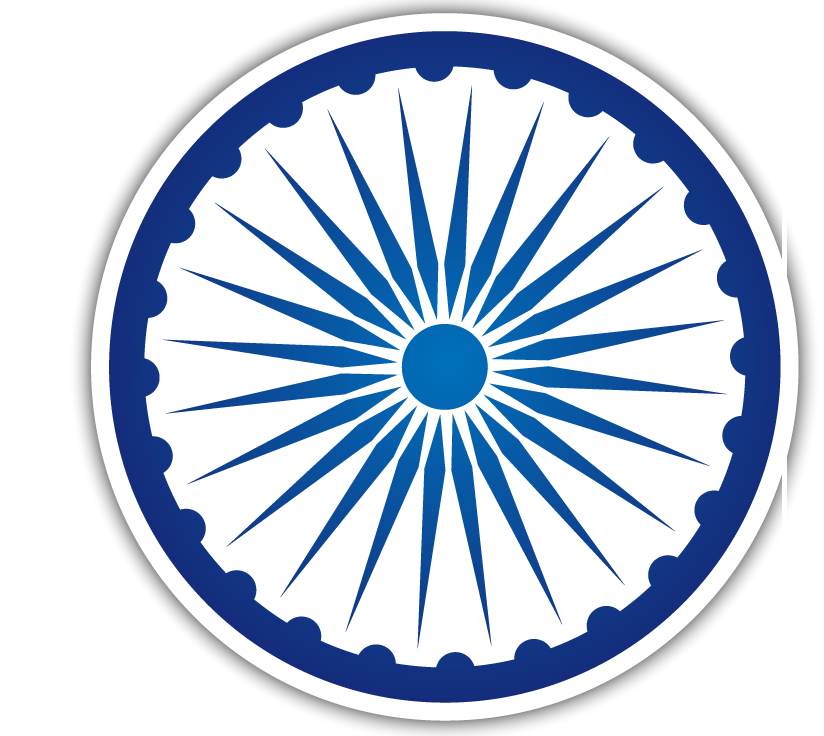
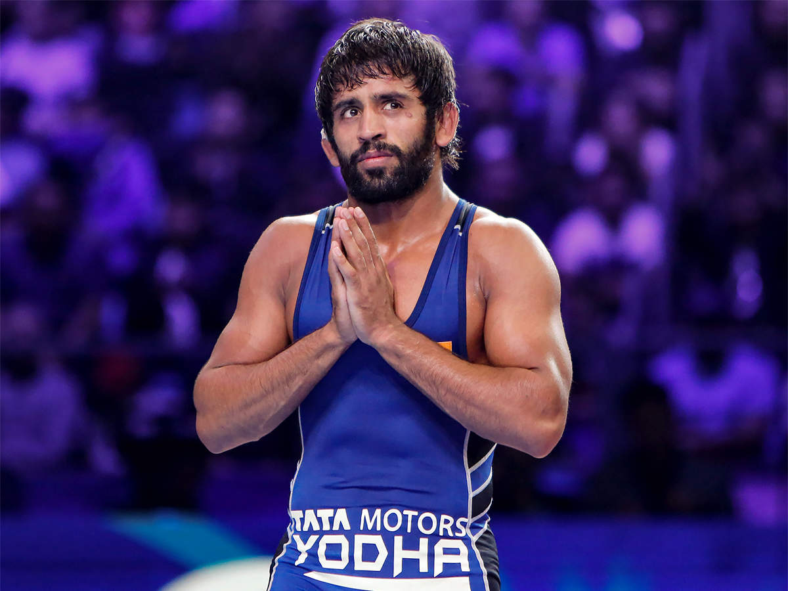

| Athelets | Medals | Games | Expenditure |
|---|---|---|---|
 PV Sindhu PV Sindhu | Silver (2016) Bronze (2021) |
Badminton | $30,000 |
 Neeraj Chopra Neeraj Chopra | Gold (2021) | Javelin Throw | $40.000 |
|  Bajrang Punia | Bronze (2021) | Wrestling- Men freestyle 65kg | $25,000 |
 Chanu Saikhom Mirabai Chanu Saikhom Mirabai | Silver (2021) | Weightlifting- Women's 49kg | $20,000 |
 RAVI KUMAR DAHIYA RAVI KUMAR DAHIYA | Silver (2021) | Wrestling- Men's 57kg | $30,000 |
 LOVLINA BORGOHAIN LOVLINA BORGOHAIN |
Bronze (2021) | Women's welterweight·Boxing | $40,000 |